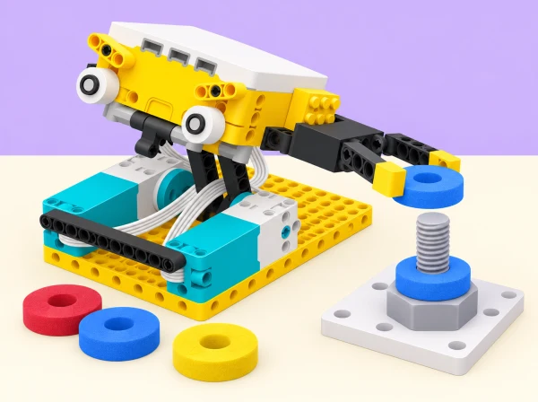

La tripulació d’un satèl·lit educatiu de ficció ha de moure una peça gran i lleugera en un tauler de pràctiques. Dissenyem una eina robòtica SPIKE Prime que subjecta una volandera d’escuma o guia un cable tou. El focus és pensar en les necessitats de qui usa l’eina: guants, camp de visió i accés limitat a les peces.
Els tres exemples del brief —martell amb sensor de moviment, selector de peces amb sensor de color i mecanisme que gira una femella— s’adapten com a variants de maqueta; substituïm el martell per una eina de pressió lenta sense impacte i els perns/femelles per peces grans de cartó o escuma. La comparació d’engranatges inclou tant reducció (menys velocitat, més parell) com augment (més velocitat, menys parell). Es pot provar un sensor diferent per activar la pinça i variar la velocitat segons una peça identificada per etiqueta de color o segons el senyal de contacte; això no és una mesura directa del material. Per explorar la consigna oficial d’incorporar IA, l’equip pot demanar idees de disseny a una eina autoritzada i verificar-les davant dels criteris; això és assistència de disseny, no control intel·ligent SPIKE. Sense imatges de persones, dades identificables ni afirmacions no verificades.
Recollim una fitxa de necessitats de l’usuari i les diferències entre la tasca a la Terra i en EVA simulada, esbossos de variants, dues relacions d’engranatges comparades, el programa i una taula amb èxits, falses activacions, temps i facilitat d’ús amb guants/camp visual parcial. Utilitzeu només peces grans d’escuma, cartró i cable tou, amb moviment lent i aturada accessible. No poseu el dispositiu sobre el cos ni el presenteu com una eina espacial operativa.
Partim del repte SPIKE Activity Brief: Astronaut Tools i els exemples oficials de codi per blocs/Python. La situació manté les tasques d’EVA de traslladar femelles entre perns i encaminar cables, la comparació amb les eines terrestres, les restriccions de guants i visió del client, els exemples de martell/selector/desmunta-nous traduïts a maquetes sense impactes, els avantatges de gearing up/down, l’activació amb diferents sensors, l’ajust de velocitat segons l’objecte i el repte d’explorar IA. S’indica que l’IA pot ajudar a idear però no controla el model SPIKE. Materials, proves i context són propis; l’ampliació és segura i no operativa en espai real.